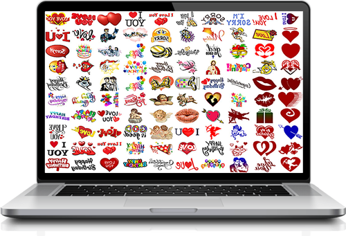
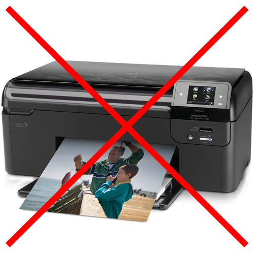
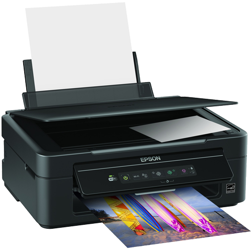
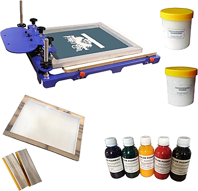
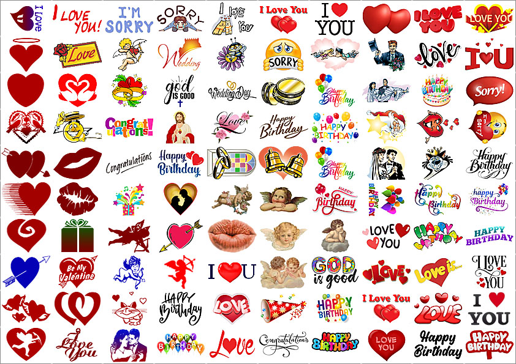
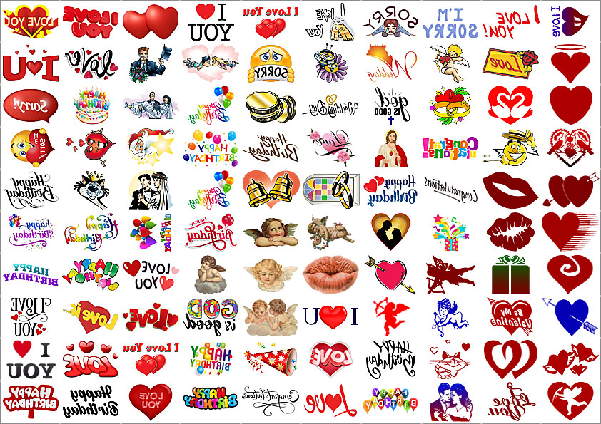

|
Подготовка изображений для печати Компактно сформируйте изображения на экране компьютера или смартфона в зеркальном отображении. Вы можете использовать готовые изображения из каталога (бесплатно входит в комплект поставки расходного материала), создать их самостоятельно или получить макет изображения от клиента. Для работы используйте любой графический редактор, например Фотошоп. На одном листе материала (формат А4) в среднем помещается 100 изображений. 
Печать изображений Изготовление изображений на материале Floral Jet Film может производиться при помощи обычного струйного принтера или методом шелкографии (трафаретная печать). Струйная печать: Изображения распечатанные методом струйной печати подходят только для переноса на цветы светлых оттенков. Для печати изображений на Floral Jet Film вам понадобится обычный струйный цветной принтер с вертикальной загрузкой листов (сверху). Принтеры с горизонтальной загрузкой, например некоторые принтеры Epson или HP, могут повредить расходный материал, поскольку не предназначены для работы с тонкими материалами.  1. Отделите прозрачную пленку от белого листа материала. 2. Вставьте белый лист материала в принтер. 3. Распечатайте изображения на глянцевой стороне белого листа. 4. Дайте просохнуть около 1 минуты. 5. Аккуратно нанесите прозрачную пленку клеевым слоем на лист с распечатанными изображениями. Используя любой твердый предмет (например кредитную карту), разгладьте пленку по всей поверхности листа с изображениями, так, чтобы не было пузырьков воздуха между прозрачной пленкой и белым листом с изображениями. Трафаретная печать: Методом трафаретной печати вы можете создавать изображения, надписи или фотографии белыми, золотистыми и серебристыми чернилами для переноса на живые цветы темных оттенков. Контрастность изображений будет зависеть от вида и цвета лепестков цветка. Изображения будут выглядеть лучше всего, если вы нанесете их на лепестки цветов более ярких оттенков. По этой причине струйная печать не рекомендуется для очень темных цветов, таких как темно-красные розы. В этом случае гораздо эффективнее будет использовать метод шелкографии, поскольку он позволяет нанести на лепестки золотой, серебряный и белый цвета.
Кроме того, с помощью шелкографии можно создавать светящиеся в темноте надписи флуоресцентными красками. Процесс трафаретной печати не сложен. Сейчас в Интернете доступны наборы, разработанные специально для этой цели (особенно наборы для печати на одежде, которые стоят около 40 долларов за комплект).  Ключом к созданию макетов шаблонов трафаретной печати является необходимость работать с каждым цветом отдельно, то есть необходимость работать слоями. Создается несколько дизайнов, а затем отправляется на печать. Этот процесс займет в среднем несколько минут для каждого типа изображения и будет зависеть от выбранной цветовой палитры. Всю необходимую информацию и инструкции по трафаретной печати и использованию специальных наборов для печати можно легко найти в Интернете. Трафаретная печать обычно включает от одного до трех разных оттенков. Использование большего количества цветов обходится дорого и не всегда оправдывает затраченное время. Трафаретная печать в золотых и серебряных тонах идеально подходит для создания поздравительных сообщений и изображений на цветах более темных оттенков. Вы можете изучить трафаретную печать на более позднем этапе своего бизнеса, поскольку этот метод более сложен, чем струйная печать, и не является обязательным условием для начала этого делового предприятия. Со временем вы легко освоите этот метод и расширите ассортимент предлагаемой продукции за счет внедрения этой новой технологии. Любой графический редактор позволит вам создавать не просто «стандартные» эскизы из вашего каталога изображений, но и принимать персональные, эксклюзивные и более дорогие заказы, расширяя спектр ваших услуг и как следствие значительно повышая прибыльность вашего бизнеса.
Перенос изображения на цветок Вырежьте ножницами нужное изображение примерно по контурам. Затем отделите прозрачную пленку от изображения и наклейте на лепесток цветка изображением. Смочите обычную губку водой и обильно смочите всю поверхность наклейки на цветке. Подождите 10-20 секунд, затем отделите прозрачную пленку от изображения на цветке. Готово! Отделив прозрачную пленку вы увидите на цветке четкое красочное изображение. Возникает ощущение будто цветок и вырос таким! отклеиваете подложку и наклеиваете на живой цветок, затем аккуратно разглаживаете изображение, оно приклеиваетеся плотно к лепестку цветка, после чего смачиваете перенесенное на цветок изображение обычной водой при помощи губки. Примерно через 30 секунд вы снимаете подложку и на цветке остается только красочное изображение Материал Floral Jet Film уникален тем, что при нанесении изображения на живой цветок материал не виден на цветке, даже при внимательном рассмотрении, видно только четкое, цветное изображение. Параметры изображения и текста безграничны. Пожелания, поздравления, приглашения, картинки и фотографии, все это можно легко распечатать и в любой момент перенести на живые цветы.
Шаг 1. Подготовка изображения для печати. Итак, вы печатаете подготавливаете изображения заказчика в зеркальном отображении, далее печатаете заранее подготовленные на компьютере или смартфоне изображения на первом листе белого цвета... затем наклеиваете пленку на распечатанный лист с изображениями и разглаживаете получившийся "бутерброд" например пластиковой картой, так, чтобы не было пузырьков воздуха между склеенными листами материала. Материал Floral Jet Film уникален тем, что при нанесении изображения на живой цветок материал не виден на цветке, даже при внимательном рассмотрении, видно только четкое, цветное изображение. Параметры изображения и текста безграничны. Пожелания, поздравления, приглашения, картинки и фотографии, все это можно легко распечатать и в любой момент перенести на живые цветы. Изготовление изображений и нанесение изображений на флористическую пленку производится одним из двух способов: печатью на струйном принтере или шелкографией (трафаретной печатью). Для печати изображений на Floral Jet Film вам понадобится обычный струйный цветной принтер с вертикальной загрузкой листов (верхней загрузкой). Принтеры с горизонтальной загрузкой (нижняя загрузка), например некоторые принтеры Epson или HP, могут повредить пленку, поскольку они не предназначены для работы с тонкими материалами. Ваш1 домашний бизнес не будет успешным без большого количества различных готовых надписей и картинок (валентинок, пожеланий, поздравлений и многого другого) – все это обязательно должно присутствовать в вашем каталоге. Где я могу найти изображения? Вы можете создать их самостоятельно, найти в Интернете, заказать у графического дизайнера или использовать собственные изображения вашего клиента. Для печати изображений можно использовать любой графический редактор (не обязательно самый мощный или навороченный).   В редакторе вы создадите макет для печати, лист А4 с выбранными изображениями. Создание макета займет всего несколько минут, а печать одного листа примерно 1 минуту (в зависимости от скорости принтера). Таким образом, всего за 1 час вы сможете напечатать 60 листов или 600 изображений наилучшего качества, а в денежном выражении это составляет $3000! |